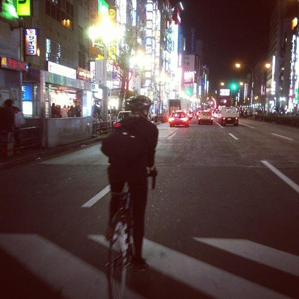
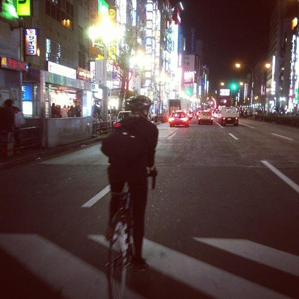
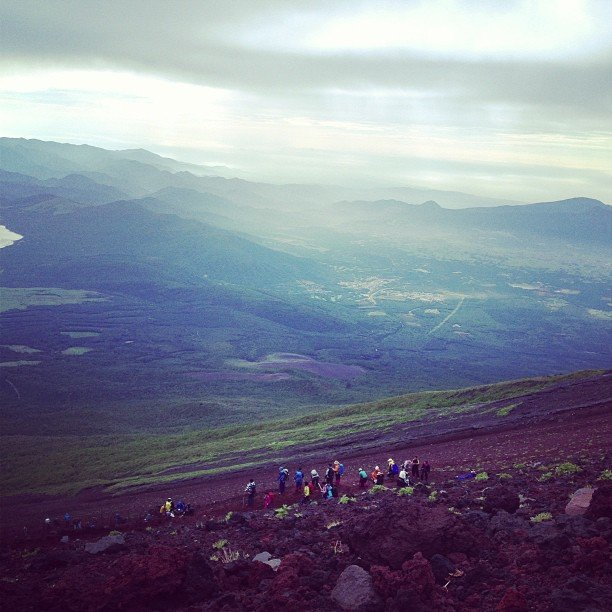
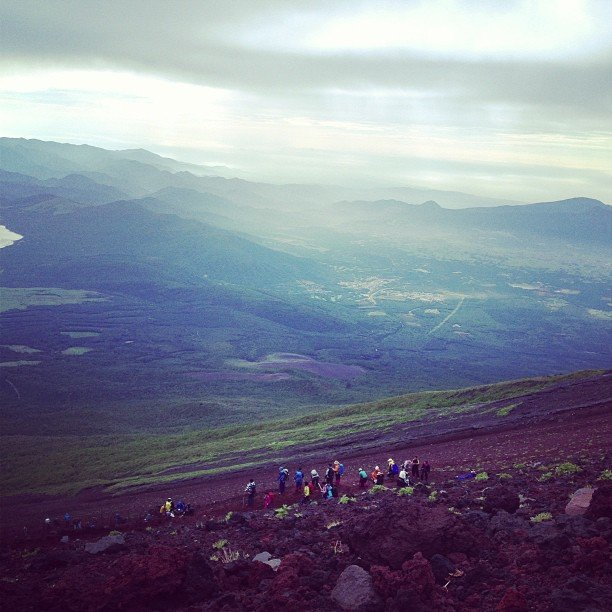
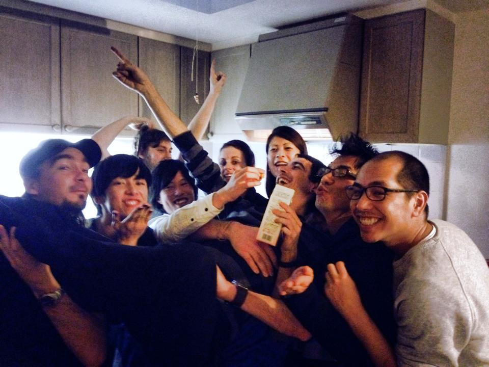

About
About Projects
Projects Books
Books Games
Games Stories
Stories Store
Store Notes
Notes How-to
How-toFrom 2012 to 2014 I lived in Odaiba(Tokyo, JP) with my partner Devine. I covered some of this experience in my 2013dec31 yearly post, and again in my 2014dec31 yearly post.
We kept a travel blog in the beggining called 60 days later. This blog also includes other times we'd been to Japan, and the time we spent in Montreal between trips.
We arrived in the country on a working holiday visa, with plans to try and live there for a while. We had traveled to Japan before on two separate occasions. The first time we stayed for a month, the second time we stayed for 3 months. We enjoyed staying somewhere long enough to go back to the same places, to develop a sort of routine. This was our goal, to stay a while, to throw a bit of unknown into our lives.
At first, we stayed at a guesthouse near Toritsu-Kasei station, near Koenji in Nakano. We arrived late at night in the rain, taking instructions from a wet map. We shared the house with 2 other travelers (we had our own room). The room had tatami flooring and a single bed, the second person was meant to sleep on the floor, Japanese-style. A few days into our stay we grabbed our tools and took the bed apart. We laid the pieces against a wall. The room was much bigger without a permanent bed. We slept on futons on the floor together. In the winter the pipes outside would freeze, and we had to go outside in the cold to empty hot water over them.
We now had a little office in central Tokyo. We had our bikes shipped from the airport to our guesthouse.
We went out a lot in those first few weeks. Every day we'd visit a new restaurant, cafe, bar or park in the area. We soon realized that we would have to get jobs, because we were both quickly running out of money. We were lucky, we found jobs fast, myself at a small animation studio in Shinjuku, and Devine at a start-up that made language learning tools in Odaiba.
One evening it was cold, and it snowed so hard so fast that all the trains in Tokyo stopped running. I didn't take the train to go to work because I had my bike, but the snow was so thick that cycling through it was impossible. I walked my bike home for an hour in the cold. Devine welcomed me home with dinner, and with a super famicom he had found at a used game store at Nakano Broadway. We played Mario Kart all night, and managed to forget how little we were seeing each other since we'd both started working.
I worked from 0900 to 1900 everyday, sometimes later. Devine worked from 1000 to 2100.
Devine's workmates helped us secure an appartment in Odaiba, where the company was located. That turned out to be a bitter sweet deal, because the proximity to the company meant that they expected Devine to be at work more often (he was asked to come in on weekends too). But also, we wouldn't have gotten a great apartment like this without their help. Finding an appartment in Japan is difficult for foreigners, there are many rules and you've got to pay key money (a large sum deposit that is given back to you when you leave), as well as a few month's rent.
The appartment was too big for us. We bought used furniture from Sayonara sales on craigslist, but overall it was mostly empty. It was located right near the beach near Odaiba-Kaihin Koen station, in the Sea-Rea buildings. The apartment was in a fancy, fancy building. There was bike parking on the first floor, and the apartment itself had thick walls, unlike our guesthouse in Nakano. We could play music loud and no one would hear us. Our balcony was gigantic. We could see the Yurikamome train running from our window.
Our spot in Odaiba was near many popular malls, like Palette Town, Venus Fort, Diver City etc. It was a busy, noisy area, but at night when everyone left before the last train, the place was ours. We loved talking walks along the water front, and through empty malls. The unicorn gundam was set up near Diver City, we visited it often. In Diver City we liked going to the kaiten sushi restaurant (2021 note: we weren't vegan back then, we started being 100% vegan in 2014).
We enjoyed walking around Daiba Park. There, we had an amazing view of the Rainbow Bridge. On weekends, we'd sit in the grass, drink some beer and snacks to watch the Fuji Terebi building in the distance. I was particularly obssessed with that building, because I grew up with Digimon and this building is featured in an episode of the series.
Fuji Terebi is iconic, beautiful, and I've known about it for a long time. It was great to finally see it with my own eyes, and it was even more amazing to live right near it. We only had to walk 10 minutes to see it.
The beach was right at our doorstep. We never tried to swim in these waters because there were too many jellyfish.
My job was fine. My boss didn't have too much work to offer a 2D artist, but hired me anyway so I could learn how to do textures for 3d models featured in the cut scenes of games. I had zero 3ds max experience, but I had used Maya in the past and had to use both. My first contract there was on the Puppeeter game for Playstation 2. I worked on backgrounds in the game, and helped other 3d artists in the studio to touch up existing textures (my name is in the credits, my boss pushed hard for that which is kind of cool).
The company was small at the time, with half the staff being Japanese and the other foreigners from various countries. Nearly every friday we went out as a group to drink. Once in a while our boss would take us out on more elaborate outings. One time he rented a double-decker bus equipped with a bar, we toured around Tokyo all evening. Another time, our boss took us to a Mongolian wrestling restaurant. They served traditional Mongolian food and drinks, and the restaurant owner picked men from the restaurant to wrestle together. He had them dress up in traditional Mongolian wrestling wear. Then, he picked a someone for them to fight over. I was singled out for this role. I falsely assumed that all I had to do was wear a Mongolian traditional attire and to act as inspiration for the fighters... but I too suffered some embarassment. The worse thing is that we went back the next year, and I got singled out again for this accursed role.
Working at the studio was sometimes... difficult. My computer had many issues, and I lost a lot of time to its daily tamtrums. It got so bad that I started to make comics to make myself feel better.
We worked during the week, and explored Tokyo by biycle on weekends. We liked exploring the industrial area around Odaiba. Cycling became a big part of our lives. We cycled 30 km from work to home everyday. We liked to pick random destinations and to cycle there, just for fun. Cycling at night was especially fun in Tokyo because of all the lights. It didn't feel dangerous. In Tokyo, drivers are used to cyclists and drive very carefully.
I loved riding to Shinjuku for work from Odaiba. It was long and traversed many fun areas, like Harumi, Tsukiji, Ginza, Chiyoda and Shibuya. When I got to work I was always in a good mood. I cycled, rain or shine or snow.
 

In evenings we went to Saizeriya, a 24 h family restaurant, to talk about our day. Eventually, Devine quit the job in Odaiba. The owners of the company were disrespectful, forbidding their employees to have personal projects or any interest other than work. Devine spent time at home instead, and decided to learn how to make games. In just 3 months, they made and released Hiversaires. Shortly after, they accepted a job at another language learning company called IKnow. They treated them much better there, the work environment was healthy. Like me, they began cycling long distances to go to work in Shibuya.
We started working on oquonie together after Hiversaires, as a sideline to our full-time jobs.
We did a lot of things while in Japan, like climbing Mount Fuji (3776 m) in early July. We climbed at night, skipping sleep, so we could arrive at the top for the sunrise. Some people pay for space in one of the many stations along the mountain to sleep, but we chose to do it in one go. Climbing in the dark was fun, everyone had headlamps. It didn't get too cold because it was summer, but it did rain at night. It got much colder near the top because of the wind, and altitude. The sky was unobstructed, we got a good view of the sun, and of the land below. The descent was a pain, the path is easy but by then our legs were dead.
Many people buy walking sticks at the base of the mountain. You can get the sticks marked at each station on the mountain, that way you can prove you went up all the way (we didn't carry one, but our friend Lisa did).
 

We also went to a music festival in Niigata in the mountains. A typhoon hit Japan while we were on that mountain, and we lost our tent. Our time there was memorable. We left in February 2014 because Devine's visa got rejected. They didn't have enough experience as a software developer to get the visa. I already had my work visa for 3 years. We could have tried harder to get it, but in the end we decided that we didn't want to work in Japan. Living there is amazing for so many reasons, but we were ill-suited for Japanese work culture.
Devine's new job was much better than the last, but working in Japan meant that we still both finished at 2000 everyday. We barely saw each other, and that got too hard.
I took leave of my job in November 2013. I was burnt out, and needed a break. Working in that studio was unhealthy for too many reasons. When Devine's visa got rejected, I was sort of...relieved, because I didn't want to have to go back working there.
In our last month there, we sold all our things again, cycled through our favorite areas, returned to restaurants we liked and saw all of our friends. Our sayonara party was amazing, we invited everyone we knew to our place.
We didn't live in Japan for long, but it's a place we'll gladly return to as visitors. We returned there by sailboat in 2019, and stayed for a full year.
Below are some photos of our favorite moments in Japan.